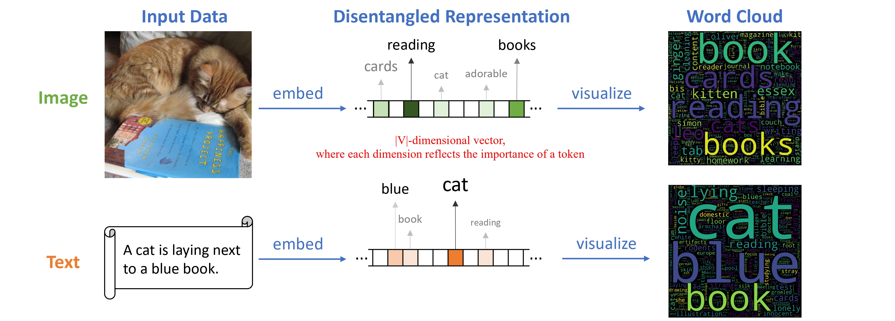
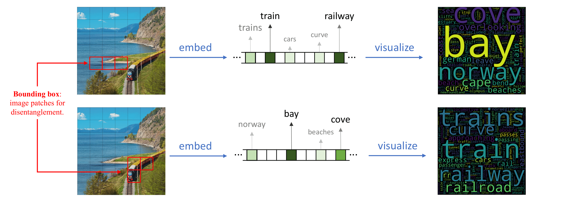
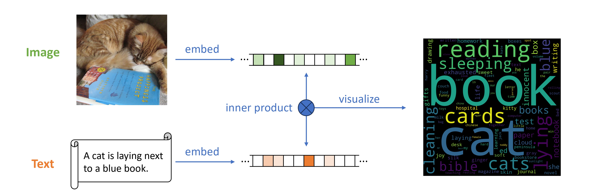
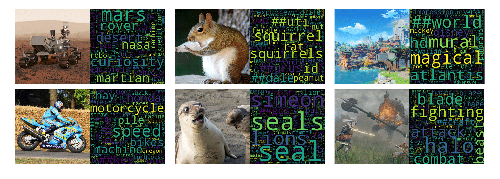

Challenge: Disentangled representation learning remains challenging as the underlying factors of variation in the data do not naturally exist. The inherent complexity of real-world data makes it unfeasible to exhaustively enumerate and encapsulate all its variations within a finite set of factors.
Approach: In this paper, we present Vocabulary Disentangled Retrieval (VDR), a retrieval-based framework that harnesses natural language as proxies of the underlying data variation to drive disentangled representation learning. Our approach employs a bi-encoder model to represent both data and natural language in a vocabulary space, enabling the model to distinguish dimensions that capture intrinsic characteristics within data through its natural language counterpart, thus facilitating disentanglement.
Results: We extensively assess the performance of VDR across 15 retrieval benchmark datasets, covering text-to-text and cross-modal retrieval scenarios, as well as human evaluation. Our experimental results compellingly demonstrate the superiority of VDR over previous bi-encoder retrievers with comparable model size and training costs, achieving an impressive 8.7% improvement in NDCG@10 on the BEIR benchmark, a 5.3% increase on MS COCO, and a 6.0% increase on Flickr30k in terms of mean recall in the zero-shot setting. Moreover, the results from human evaluation indicate that interpretability of our method is on par with SOTA captioning models.
What is Disentangled Representation?
Disentangled representation [1] is a concept in machine learning
where the model learns to separate the underlying factors of variation in the data
into distinct units within its representation.
This means that each dimension of the representation captures a factor of variation,
making it easier to understand the learned representation.
What are the benefits of disentangled representation?
A well-disentangled representation independently captures underlying factors that explain the data,
thereby facilitating explainability, controllability, and debugability of machine learning.
Disentangled representations bring various benefits such as interpretability, adaptability to new tasks,
resilience to input variations, and streamlined feature manipulation.
Why Disentangling Representation on LM Vocabulary Space?
Real-world data is inherently complex and cannot be fully encapsulated by a limited set of attributes.
Natural language expressions adeptly represent diverse real-world objects and can be tokenized into a finite vocabulary space.
This vocabulary space serves as an effective proxy for capturing the variations within data.
1. Inspectation on Disentangled Representation

2. Fine-grained Disentanglement

3. Retrieval Reasoning

4. More Examples

Please see our GitHub repo for all the code and data.
Below is an example demo code:
@inproceedings{zhou2024retrievalbased,
title={Retrieval-based Disentangled Representation Learning with Natural Language Supervision},
author={Jiawei Zhou and Xiaoguang Li and Lifeng Shang and Xin Jiang and Qun Liu and Lei Chen},
booktitle={The Twelfth International Conference on Learning Representations},
year={2024},
url={https://openreview.net/forum?id=ZlQRiFmq7Y}
}